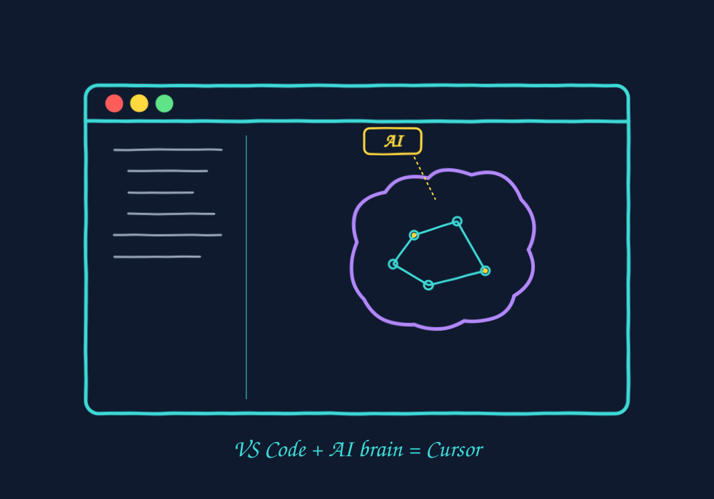
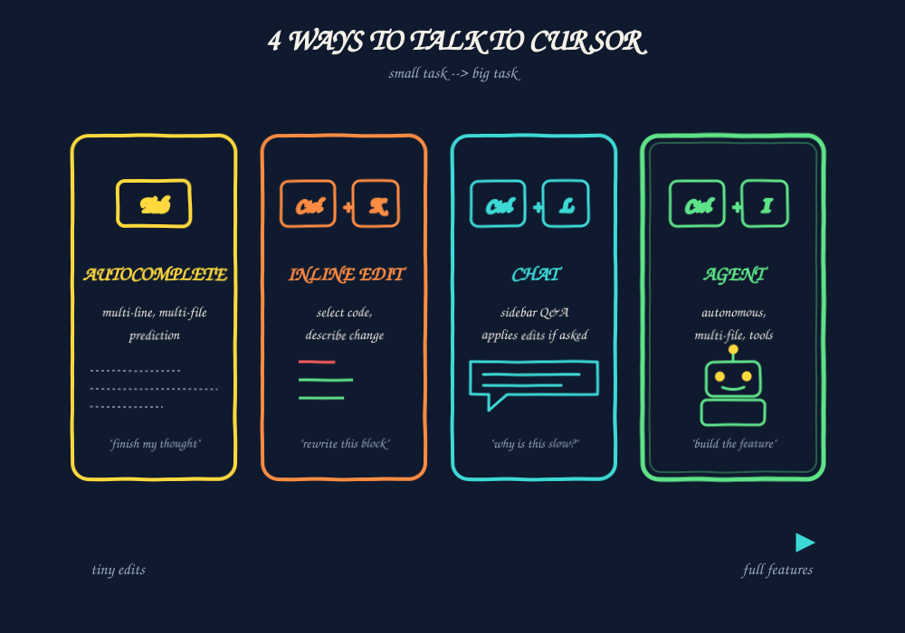
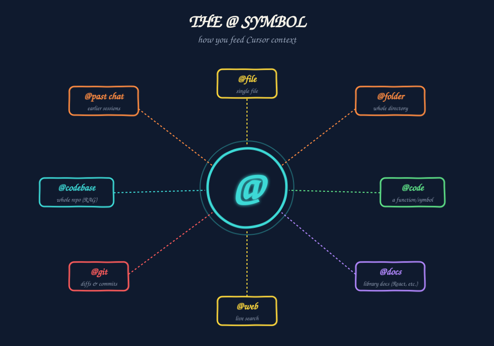
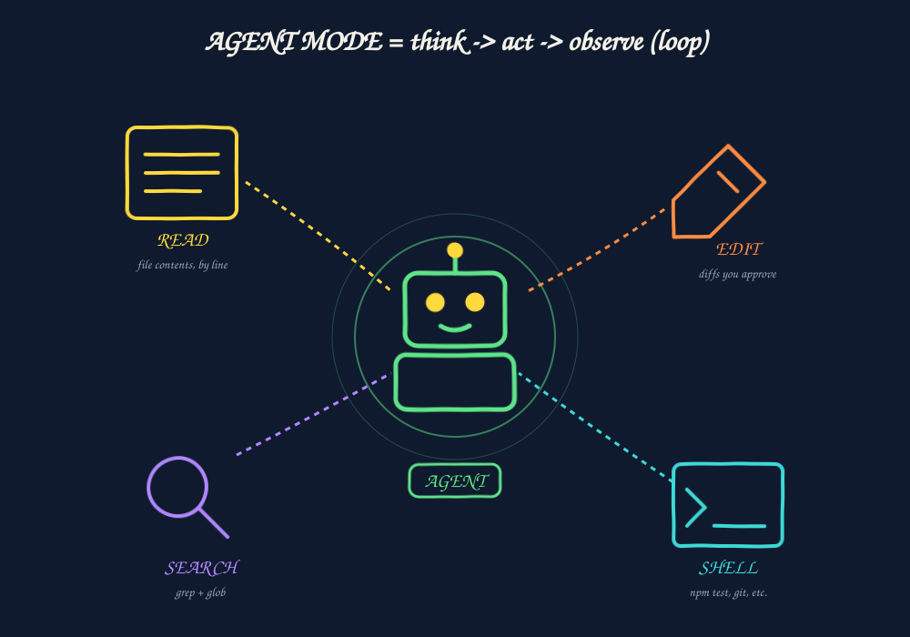
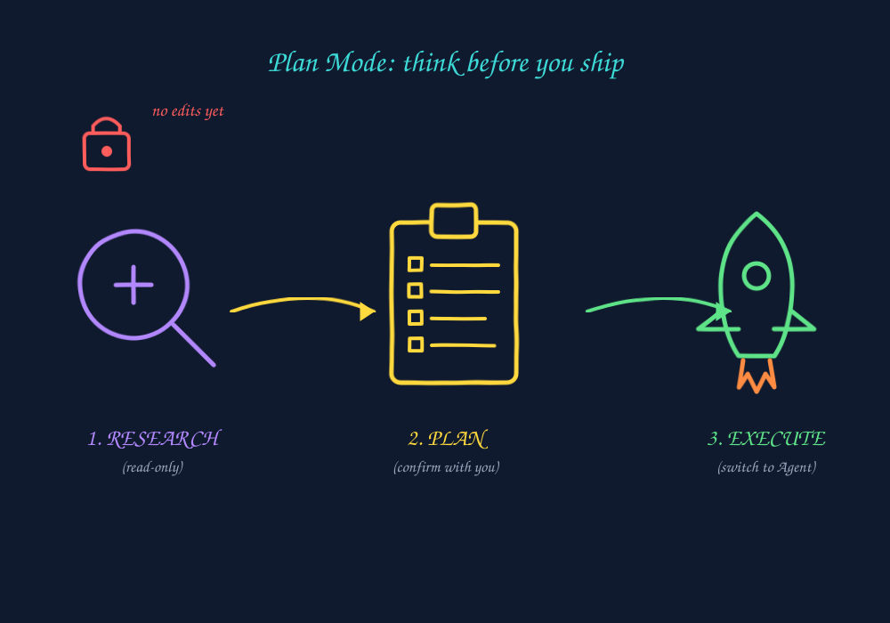
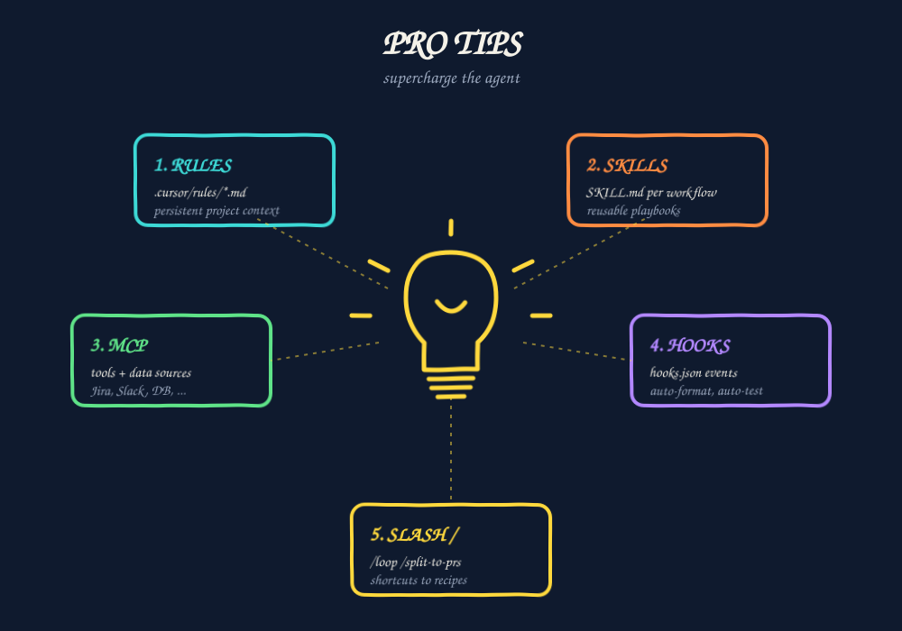
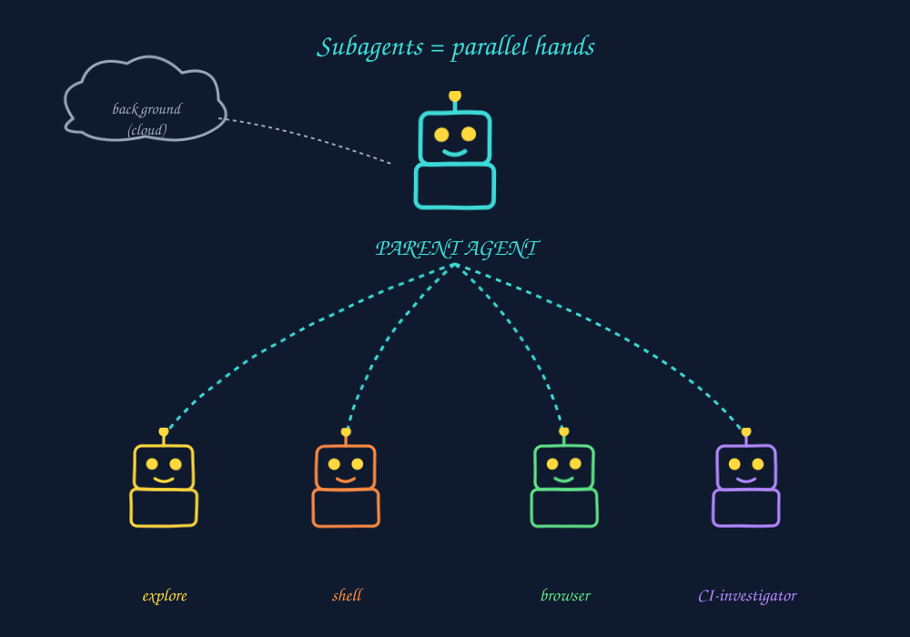
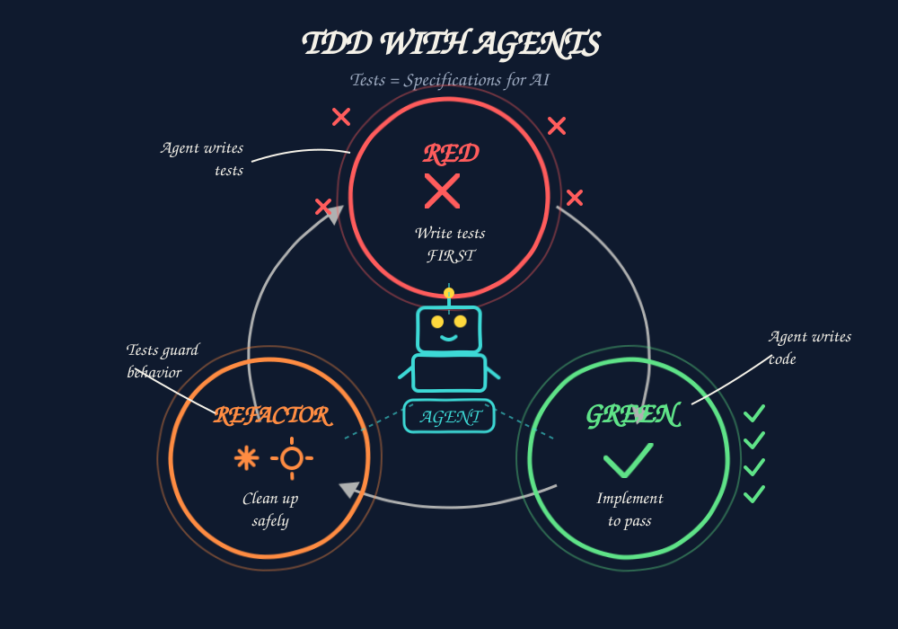
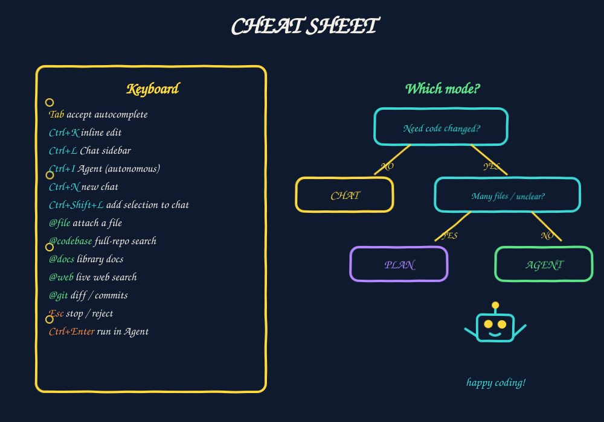

The Agentic Way
10 slides · beginner → advanced · ~15 min

cursor.com → download → sign in → "Import VS Code settings" on first run → open any repo, hit Tab on a half-written line.


@auth/login.ts with @auth/oauth.ts and pull shared logic into a util. Use @docs for NextAuth idioms."
@codebase = AI guesses from open files only. Always reference what matters - quality jumps immediately.
npm test, git, installs@components/Header.tsx. Persist in localStorage. Respect prefers-color-scheme. Add a test."

.cursor/rules/*.mdc — project-scoped instructionsAGENTS.md — portable, repo-root manifestglobs: frontmatter to scope rules per file typeSKILL.md for reusable multi-step playbooks
pnpm, never npm. Co-locate tests as *.test.ts. Public APIs need JSDoc. Never commit .env."

hooks.json): run scripts on agent events
slugify(str): spaces, accents, empties, max length."
2) "Now make the tests pass — minimum code only."
3) "Refactor for readability. Tests must stay green."
